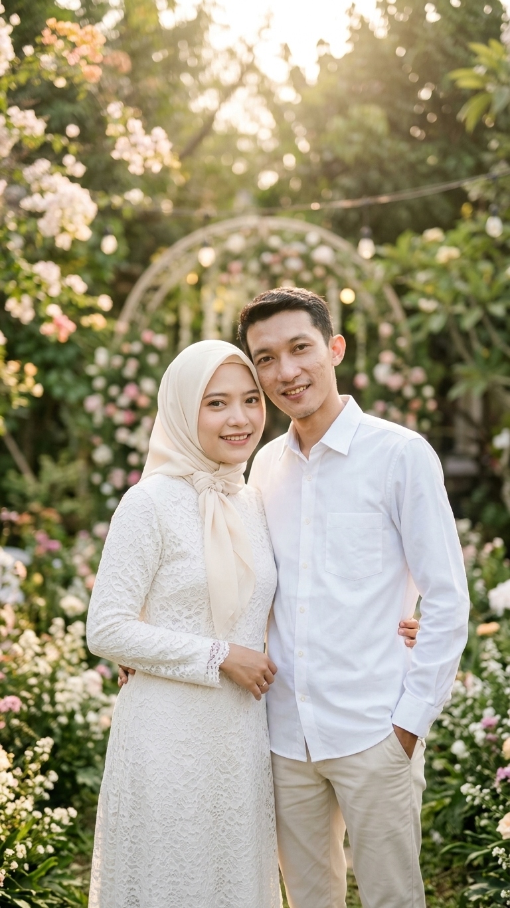
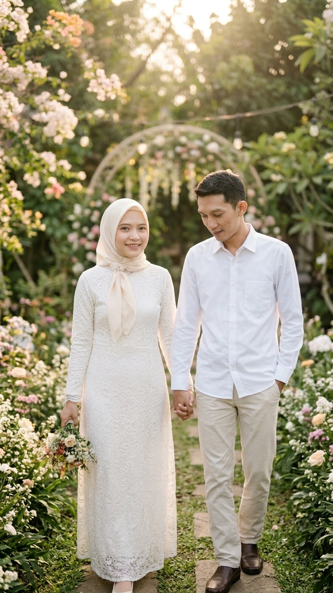
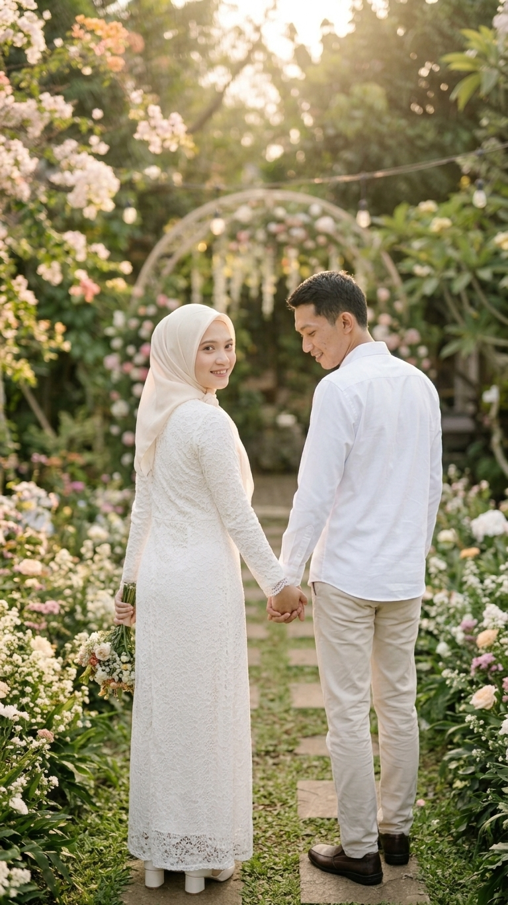
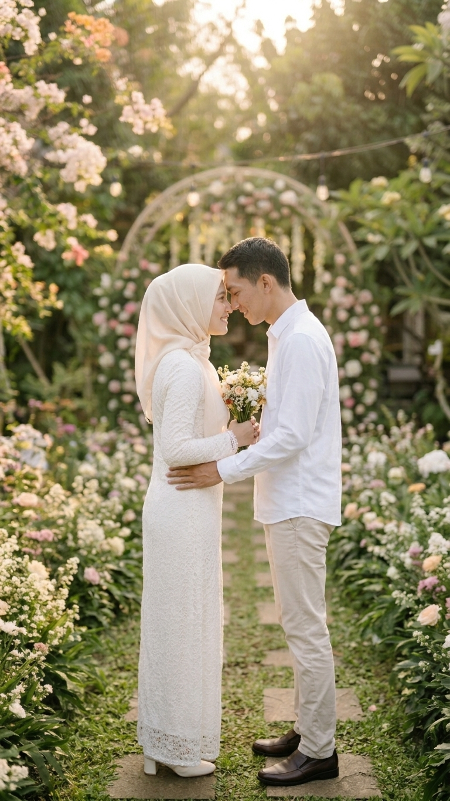

THE WEDDING OF
Gia & Tio
17 . 01 . 2027
Dengan penuh sukacita, kami mengundang Anda
untuk menjadi bagian dari hari istimewa kami.
ASSALAMUALAIKUM WARAHMATULLAHI WABARAKATUH
Dengan memohon rahmat dan ridho Allah SWT
Kami bermaksud menyelenggarakan pernikahan kami. Merupakan suatu kehormatan dan
kebahagiaan bagi kami apabila Bapak/Ibu/Saudara/i berkenan hadir untuk memberikan doa restu.

SAVE THE DATE
Menuju Hari Bahagia
Minggu, 17 Januari 2027
WEDDING DETAILS
Rangkaian Acara
ACARA PERTAMA
Akad Nikah
09.00 WIB
Komplek Sesko AD Jl. Sapan Melati II RT 002 / RW 011
Desa Sumbersari, Kecamatan Ciparay
Kabupaten Bandung
ACARA KEDUA
Resepsi
10.30 WIB
Komplek Sesko AD Jl. Sapan Melati II RT 002 / RW 011
Desa Sumbersari, Kecamatan Ciparay
Kabupaten Bandung
OUR MOMENTS
Captured With Love



KINDLY RESPOND
Wedding Gift
Doa restu Anda merupakan karunia yang sangat berarti bagi kami.
Namun jika Anda ingin memberikan tanda kasih, Anda dapat mengirimkannya melalui amplop digital di bawah ini:
Konfirmasi Kehadiran
Mohon bantu kami mempersiapkan acara dengan mengisi konfirmasi kehadiran berikut.
Merupakan kebahagiaan bagi kami apabila Anda berkenan hadir dan memberikan doa restu. Gia & Tio 17 JANUARI 2027Terima Kasih